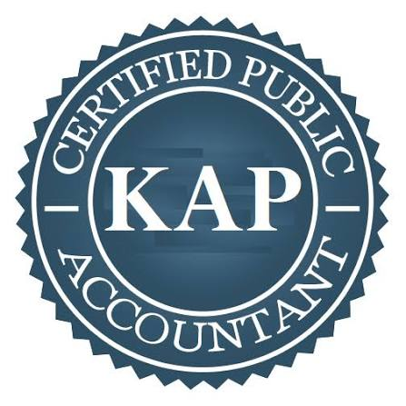

Kantor Akuntan Publik Kalista Putri & Rekan merupakan kantor yang menyediakan jasa audit, konsultasi pajak, dan Sistem Informasi Akuntansi dengan mengutamakan Integritas dan Transparansi. Kami didukung oleh tenaga profesional dengan gelar Certified Public Accountant.
Alamat Kantor:
Gedung Akuntansi Indonesia
Jalan Ahmad Yani
Banjarmasin
| Laporan Laba Rugi - Kuartal 1 | ||
|---|---|---|
| Keterangan | Debit | Kredit |
| Pendapatan Jasa | - | Rp 50.000.000 |
| Beban Operasional | Rp 10.000.000 | - |
| Rp 5.000.000 | - | |
| Laba Bersih | Rp 35.000.000 | |
Referensi standar akuntansi yang kami gunakan bersumber dari Ikatan Akuntan Indonesia (IAI) .